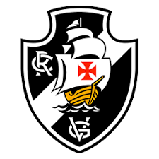

Ao longo da história do Campeonato Brasileiro, diversos clubes conquistaram o título nacional. Alguns venceram em momentos isolados, enquanto outros marcaram época com campanhas dominantes e elencos memoráveis.

O Corinthians construiu sua história no Campeonato Brasileiro com campanhas marcantes e títulos inesquecíveis. Conhecido pela força de sua torcida e por equipes competitivas, o clube se destacou em diferentes eras, conquistando o campeonato com regularidade e protagonismo. Suas campanhas ficaram marcadas pela raça, organização e decisões em momentos decisivos.

O Coritiba marcou seu nome na história do Campeonato Brasileiro com uma campanha memorável, demonstrando organização, regularidade e força coletiva. O clube paranaense surpreendeu o país ao conquistar o título nacional, ficando conhecido por um futebol eficiente e por um elenco muito bem encaixado, que entrou para a história do campeonato.

O Vasco da Gama construiu campanhas históricas no Campeonato Brasileiro, com equipes que marcaram época e títulos importantes. O clube carioca se destacou por times fortes e competitivos, protagonizando grandes decisões e deixando sua marca na história do futebol brasileiro com conquistas que até hoje são lembradas pela torcida.
Esses foram alguns dos clubes campeões do Campeonato Brasileiro que deixaram marcas históricas na competição. Cada conquista representa campanhas memoráveis, momentos decisivos e a construção de uma história que ajuda a tornar o campeonato um dos mais disputados e emocionantes do futebol mundial.